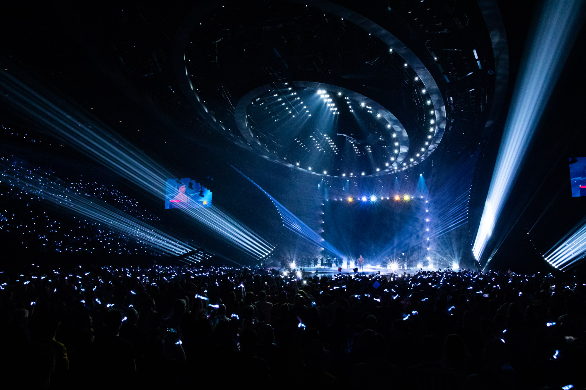
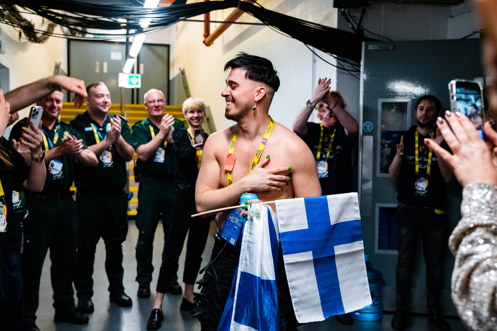

Euroviisut, Liverpool 9.-13. toukokuuta 2023
Euroviisut järjesttiin 9.-13. toukokuuta 2023 67. kerran, kun viisukansa kokoontui seuraamaan kilpailun kulkua. Vuoden 2022 kilpailun voitti Ukrainan viisuedustaja Kalush Orchestra kappaleellaan "Stefania". Venäjän, Ukrainaan tehdyn, hyökkäyksen vuoksi kilpailua ei pystytty järjestämään perinteisesti edellisen vuoden voittajamaassa. Yli 20 kaupunkia ilmoitti kiinnostuksena järjestää kilpailun. Lopulliseksi isäntäkaupungiksi valittiin Liverpool, Iso Britannia ja tapahtumapaikaksi valikoitui Liverpool Arena.
Semifinaalit järjestettiin 9. ja 11. toukokuuta ja finaali 13.toukokuuta 2023. Vuoden 2023 kilpailuihin osallistui 37 maata. Normaalista poiketen Bulgaria, Montenegro ja Pohjois-Makedonia vetäytyivät vuoden 2023 kilpailusta.
Finaaliin selvittivät tiensä 37 osallistujamaasta 26, joista 20 lunastivat finaalipaikkansa semifinaalien kautta. Loput kuusi maata koostuivat edellisvuoden voittajasta Ukrainasta ja viidestä suurimmasta rahoittajamaasta eli Saks.
Finaali järjestettin 13. toukokuuta 2023 Liverpool Arenalla. Euroviisujen voittajaksi kruunattiin Ruotsin viisuedustaja Loreen, joka sai kappaleellaan "Tattoo" yhteensä 583 ääntä. Toiseksi tullut Suomen viisuedusta Käärijä puolestaan keräsi kappaleellaan "Cha cha cha" yhteensä 526 ääntä.
Näin Loreenista tuli kaksinkertainen viisuvoittaja ja Käärijästä Suomen toiseksi parhaiten sijoittunut viisuedustaja sitten vuoden 2006, jolloin Lordi voitti kilpailun kappaleella "Hard Rock Hallelujah."

© Sarah Louise Bennett / EBU
© Chloe Hashemi / EBU